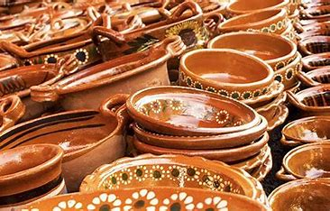
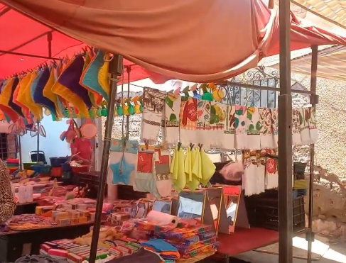

Artesanias

Se elaboran objetos de madera como sillas, mesas y puertas; flores de papel, bordados, tejidos de gancho y dos agujas; prendas de vestir, alfarería, vidriado, cobijas de lana, cestería de carrizo y madera. Tienen como traje típico el de charro.

